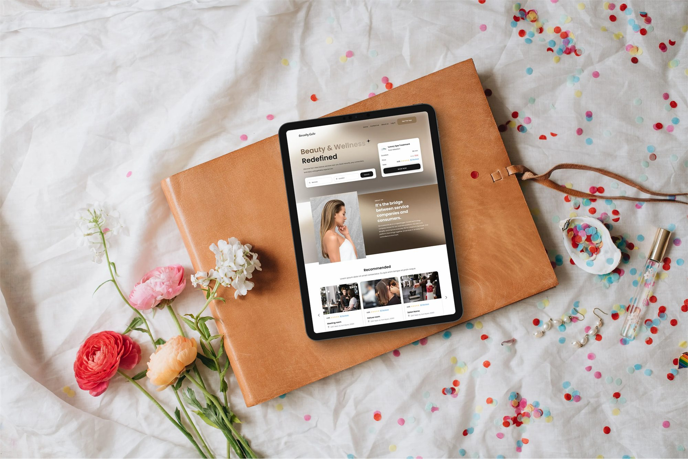
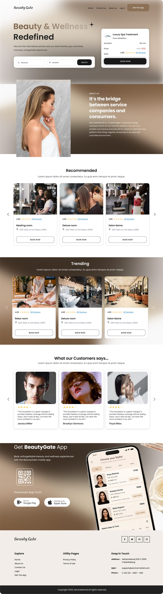
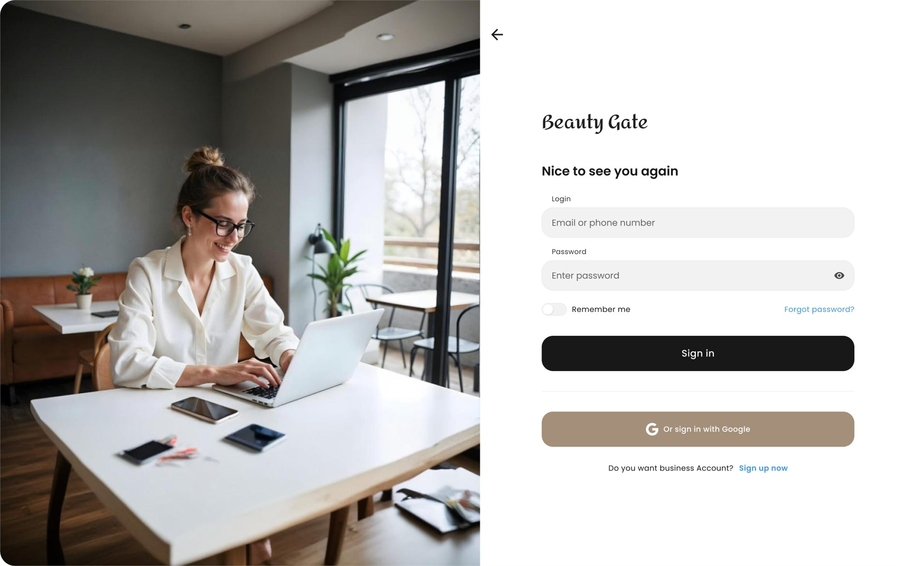

Website UI/UX · Booking platform
Beauty Gate
Overview
Beauty & wellness, booked in a few calm steps.
Beauty Gate brings beauty salons and spas together on one website. Visitors discover recommended and trending places, compare services and prices, read real reviews and meet the specialists — then book a treatment with the professional and time slot that suit them. Salon owners get their own business account to present their space and services.
- Home page01
- Salon details02
- Booking flow03
- Sign in04

01 — The website
Scroll through the pages
Beauty & wellness, redefined
A soft, editorial home page: a search-led hero, recommended and trending salons, customer stories and a download banner for the app — all in warm taupe and cream.
- Search & discover
- Trending salons
- Reviews
Everything about one salon
Photos, location and rating up top, then every service with its price and duration, the experienced specialists and the reviews — with one clear button to book.
- Services & prices
- Specialists
- Book now

Booking in three steps
01 / 03Nice to see you again
Signing in is split in two: a calm photograph on one side, a short form on the other — with Google sign-in for customers and a separate path for business accounts.

A summary that follows you
Throughout booking, a card on the right keeps the salon, chosen services and total in view, so there are no surprises at the end.
Clear progress
Breadcrumbs — services, professional, time, confirm — show exactly where you are and let you step back at any point.
Next project